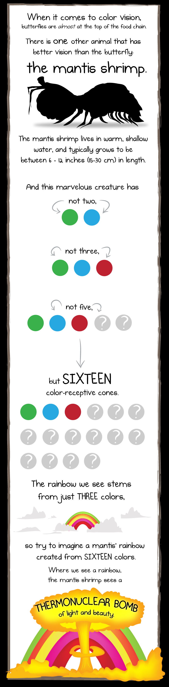
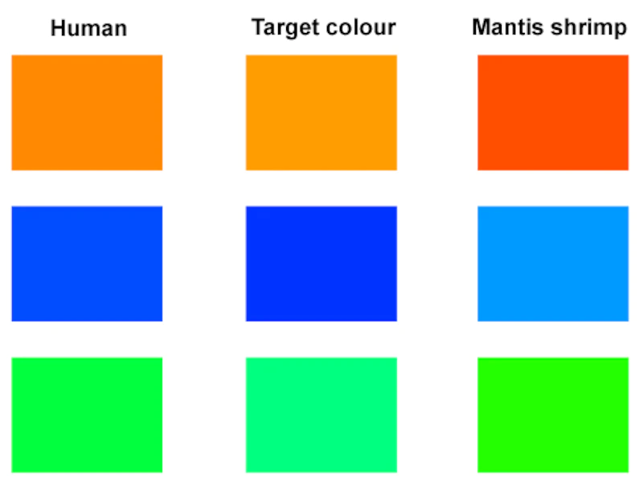

Fatos sobre o Stomatopoda

Os melhores olhos do mundo
Quem leva o titulo e o camarão mantis (Odontodactylus scyllarus) - um animal marinho que não é um mantis nem um camarão, mas um parente próximo de caranguejos e lagostas. É um olho composto, feito de milhares de pequenas unidades que detectam a luz de forma independente.
| Reino | Animalia |
| Filo | Arthropoda |
| Subfilo | Crustacea |
| Classe | Malacostraca |
| Subclasse | Hoplocarida |
| Ordem | Stomatopoda |
Muitos receptores
A maioria das pessoas tem três tipos de células de detecção de luz, ou fotorreceptores, que são sensíveis à luz vermelha, verde e azul. Mas o camarão mantis tem de 12 a 16 fotorreceptores diferentes em sua banda média.
Mas a visão não é isso tudo
Hanna Thoen, da Universidade de Queensland, descobriu que eles são muito piores em discriminar cores do que a maioria dos outros animais! Eles parecem usar mais de uma dúzia de receptores para reconhecer cores de uma maneira única, muito diferente de outros animais, mas estranhamente semelhante a alguns satélites.
